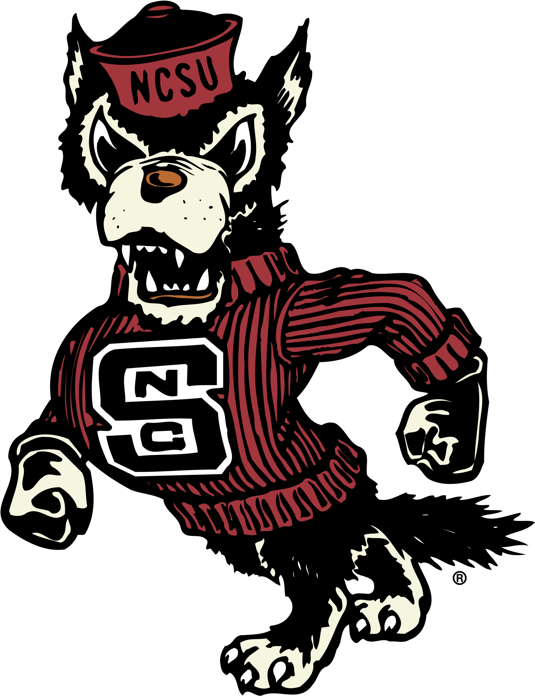

NC State University
NC State University is very large, 4-year, public university. It is a coed college that offers certificate, associate, bachelor's, master's, and doctoral degrees.
The graduation rate of NC State is 83%, it has a retention rate of 94%, and
a student to faculty ratio of 15 to 1. 43% of students recieve financial aid with
an average aid package of $13,760, with the University costing $14,958 after scholarships and grants.
Location

NC State is located in Raleigh, North Carolina. This is an Urban setting, and the campus is mainly residential. The housing at NC State costs an average of $11,957 every year. There are 10 housing options at NC State, and those are apartments for married students, apartments for single students, coed housing, fraternity/soroity housing, men's housing, women's housing, special housing for disabled students, special housing for international students, theme housing, and wellness housing (alchohol/drug/smoke-free). There are 24,671 undergraduate students at NC State.
Mascot
Tuffy, the Mascot
NC State's mascot is, what looks like a wolf, but is really a Tamaskan, a breed of dog. The reason for this is because they have an actual dog as a mascot, named Tuffy, along with their logo/logo-mascot. There have been a total of three live Tuffys!
Aptly named Tuffy, Tuffy II, and Tuffy III. These dogs were not just named Tuffy though. Tuffy II, who died in October 2021, had a real name of
Hulk. The latest Tuffy, Tuffy III, is actually the son of Tuffy the first!
Fun Fact: NC State had originally tried using real wolves as their live mascots, but it didn't work, because wolves are skittish around crowds, and one time they tried to do this, it was eventually discovered to be a
coyote, not a wolf!